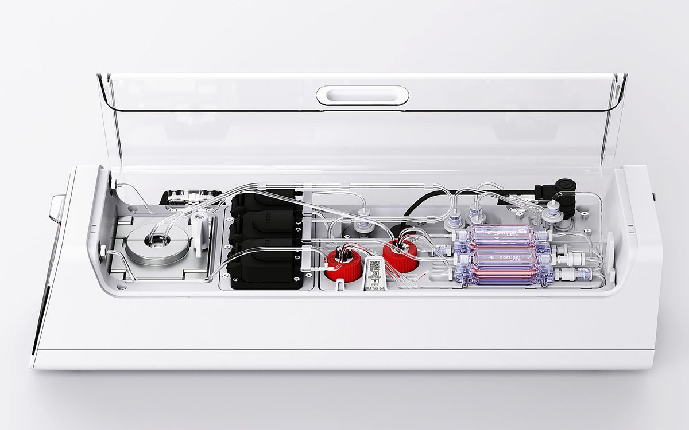
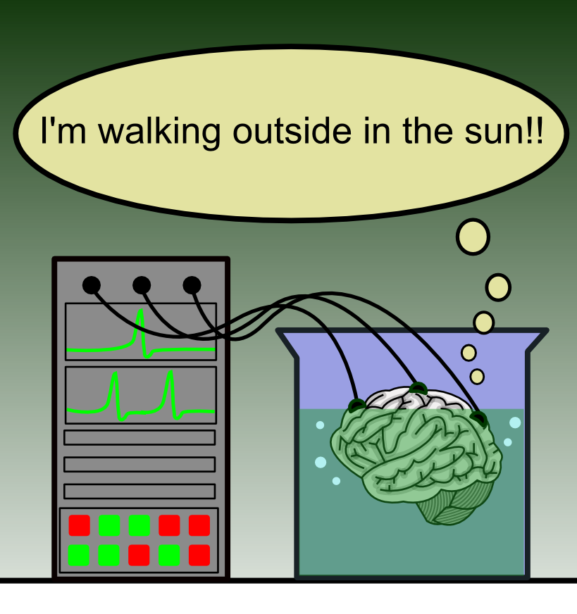
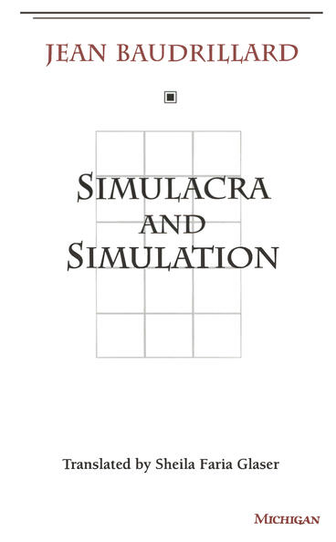
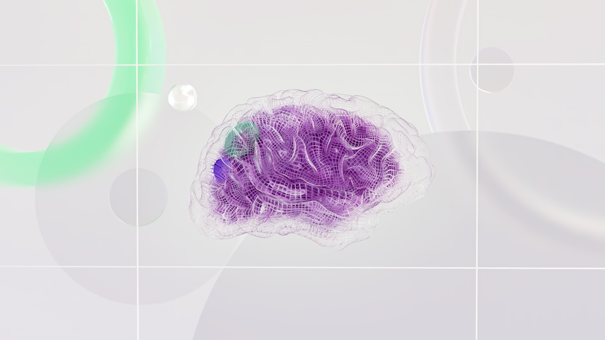

뇌세포 서버부터 시뮬라시옹까지,
현실의 경계를 묻는 철학 여행

Hilary Putnam, Reason, Truth, and History (1981)
미친 과학자가 당신의 뇌를 꺼내 영양액 통에 넣고, 슈퍼컴퓨터에 연결합니다.

Jean Baudrillard, 시뮬라크르와 시뮬라시옹 (1981)
시뮬레이션은 어떻게 현실을 대체하는가?

자신의 책이 영화에 등장했지만, "내 작업과 아무 관계가 없다"고 말했습니다.
스스로 환경을 탐색하고, 판단하고, 행동한다.
하지만 그 세계는 우리가 만들어준 시뮬레이션이다.

LLM은 반사신경, AI Agent는 진짜 통속의 뇌 — 스스로 목표를 갖고 환경을 탐색합니다.
AI Agent에게 시뮬레이션을 주는 방법은 두 가지다
사고실험 → 영화 → 현실 → 그리고 다시 질문으로
당신은 통속의 뇌가 아니라고 확신하시나요?